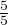
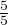
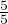
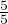

Hariliku murru nimetaja näitab mitmeks võrdseks osaks saab arvu jaotada ja lugeja näitab mitu osa on parajasti valitud. Seega on murrujoonel jagamismärgiga sama tähendus.
Lihtmurruks nimetatakse harilikku murdu, mille lugeja on väiksem kui nimetaja.
Liigmurruks nimetatakse harilikku murdu, mille lugeja on nimetajaga võrdne või suurem.
Näiteks
 on lihtmurd ja , liigmurrud.
on lihtmurd ja , liigmurrud. Hariliku murru põhiomadus: = ⋅
 , kui c≠0 ja b≠0. Seega võib harliku murru
lugejat ja nimetajat korrutada nullist erineva arvuga ilma murru väärtust
muutmata.
, kui c≠0 ja b≠0. Seega võib harliku murru
lugejat ja nimetajat korrutada nullist erineva arvuga ilma murru väärtust
muutmata.Näiteks kehtib võrdus
 =  ⋅
=  ⋅ .
.